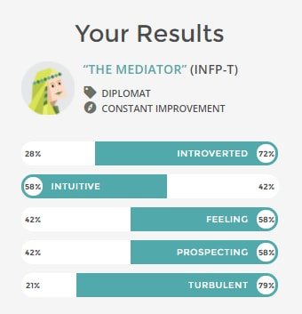
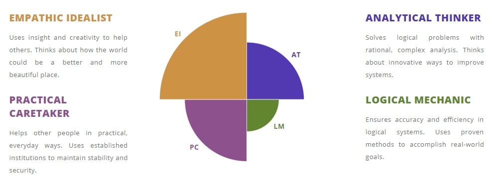

Personal Information
About Me
As you may have gathered from the front page, my name is Jonathan! (S3722092)
I'm 18 years old and I'm from Melbourne, Victoria. I graduated Year 12 in 2017 and am currently studying a bachelor of Information Technology at RMIT University. I'm half Lebanese and half Italian and I speak neither of the two languages.
Hobbies and Interests
Cars
I'm obsessed with cars, Euro cars, Japanese cars, Supercars, all cars! I enjoy going to car meets and looking at all the awesome mods people do to their cars ect. I own a 2005 Subaru Impreza that I love to work on and drive through the mountains in. There is a picture of it in the mountains just north of the Great Ocean Road below :)
Computers and Tech
I love technology. I'm always buying new pieces of tech to play around with. I like building computers, I find it pretty fun to put together a machine with matching parts and fancy lights that makes it look awesome when it turns on. And the feeling you get when you press the power button for the first time and it actually boots up is awesome.
Gaming
I'm also a gamer, that's what I mainly use my custom PC for. I play a lot of online games with friends and some single player games. Lately I've been playing PUBG with my friends and I've been playing through the Witcher 3, it's an awesome game.
I also just bought a HTC VIVE and that is so much fun to play around with.
Dog
I also have a dog, his name is Chops. Here he is :)
Interest In IT
When did it start?
I think my interest in IT started when my cousin gave me a custom built PC in around 2011. I'd never had my own proper computer before and I really enjoyed playing around with that one. Over the years I just kept experimenting with different things on the computer both in software and hardware. I built my first desktop at the beginning of high school and I'm still doing this now.
Why RMIT?
I chose to study at RMIT for a few reasons, I had visited the city campus on multiple occasions and I really liked the layout and all of the facilities, compared to other universities. One of my older cousins had also studied an engineering course at RMIT and he said that its a great place to study. Third reason, It's the only university that offered me a place. Thanks guys :)
What I expect to learn
During my time at RMIT I hope to futher my understanding of computer systems and technologies. But above all , I want to learn how to code properly, I've coded heaps of simple programs in multiple different languages over the years. But I want to be able to just code something without even thinking about how, I enjoy making things work on computers and I'm great at solving problems, I'd like to learn one specific language in detail and become really good at it.
Ideal Job
Honestly I'm still not 100% sure where I want to end up job wise. I've been thinking about Software Development/Engineering, Game/App Development, IT Systems In Business and a couple of other positions.
Here is an advertisement for a job that I found on Seek that could potentially be the 'Ideal Job' for me.
This job role involves working with a passionate team of developers to create software for customers. This job is appealing to me as its not only about how qualified you are, they expect a willingness to learn, offer ideas and collaborate to create products you are proud of. Xero is providing a great working environment and wants to support their employees and this is very important for me.
The skills required for this position include experience with JavaScript, CSS and HTML, C#, Python and other languages. It is a development roll and requires some experience with coding.
I do have experience with all of these languages, however I don't believe it is enough and I would like to build up those skills during my spare time and my time at RMIT.
Personal Profile
Myers-Briggs test Results

Learning Style test results
Auditory: 15%
Visual: 65%
Tactile: 20%
Big Five Personality test results

What these results mean for me
The results of these tests are interesting for me, they provide a good amount of information based on my responses. Although they are not entirely accurate it is good to see the results displayed as graphs and charts.
How will the results influence my behaviour in a team?
I'm not sure. I feel like I work well in a team if I am interested in the topic and have similar minded team mates. I believe that when working in a team I should take into account that my team mates will think differently to me and I should be open to all suggestions. I'm not usually a team leader unless it is something I am really passionate about, however I'm good at following a team plan and doing my fair share of the work. If there is something that I don't understand or don't know how to do I usually look up and explanation of it before doing the work. I like to make sure I do things right but sometimes this can be a negative thing as I'll spend to much time trying to perfect something that isn't all that important.
Project ideas